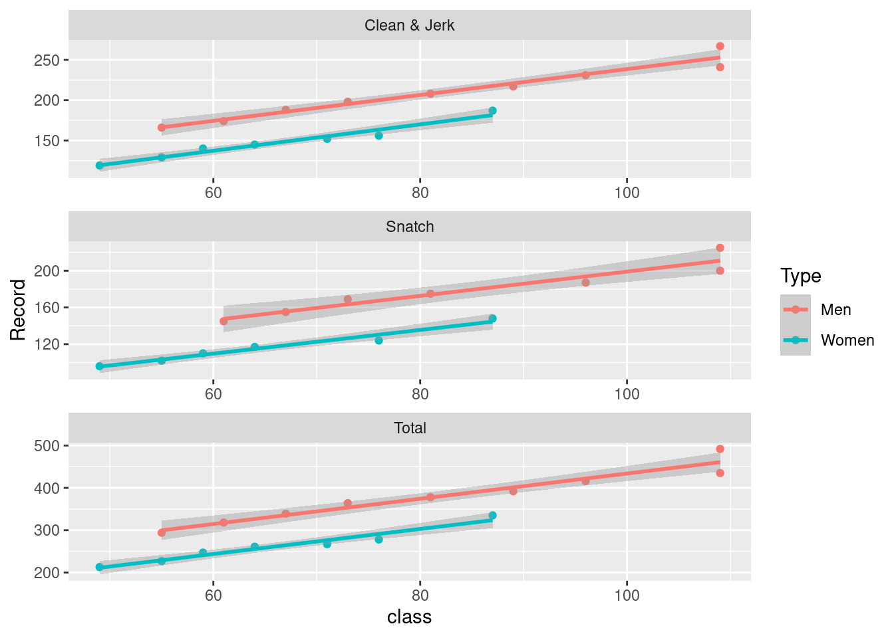

library(tidyverse)
raw_data <- read_csv(here::here("Week_1", "hw_1_data.csv")) |>
select(-9)
clean_df <- function(raw_df) {
clean_df <- raw_df |>
mutate(class = case_when(str_detect(Event, "kg") ~ Event, TRUE ~ NA_character_)) |>
fill(class, .direction = "down") |>
drop_na() |>
mutate(Record = str_extract(Record, "[0-9]+") |> as.numeric(),
class = str_extract(class, "[0-9]+") |> as.numeric())
clean_df
}
cleaned_data <- raw_data |> clean_df()Week 1 Homework
Reading and Cleaning Data
After downloading the data from Wikipedia, I did some cleaning to get it in the proper format.
Let’s see what the fits look like:
cleaned_data |>
ggplot(aes(class, Record, col = Type)) + geom_point() + geom_smooth(method = "lm") + facet_wrap(Event ~ ., scales = "free", ncol =1)`geom_smooth()` using formula 'y ~ x'
Let’s do some estimates, one linear model for each sex and event combination:
nested_mods <- cleaned_data |>
mutate(Record = str_extract(Record, "[0-9]+") |> as.numeric(),
class = str_extract(class, "[0-9]+") |> as.numeric()) |>
group_nest(Type, Event) |>
mutate(mod = map(data, ~ lm(log10(Record) ~ log10(class), data = .) |> broom::tidy())) |>
select(-data) |>
unnest(mod)
coeffs <- nested_mods |>
select(Type:estimate) |>
pivot_wider(names_from = "term", values_from = "estimate") |>
rename(c = 3, beta = 4) |>
mutate(c = 10^c)
coeffs |>
knitr::kable()| Type | Event | c | beta |
|---|---|---|---|
| Men | Clean & Jerk | 13.964334 | 0.6160483 |
| Men | Snatch | 11.514833 | 0.6189484 |
| Men | Total | 23.485806 | 0.6331054 |
| Women | Clean & Jerk | 7.253371 | 0.7190261 |
| Women | Snatch | 5.913277 | 0.7141872 |
| Women | Total | 12.470426 | 0.7270323 |
cleaned_data |>
left_join(coeffs) |>
mutate(pred = c*class^beta) |>
mutate(normalized_record = 100*(Record/((c*class^beta) - 1))) |>
arrange(desc(normalized_record)) |>
head() |>
select(Type, Event, Athlete, normalized_record) |>
knitr::kable()Joining, by = c("Type", "Event")| Type | Event | Athlete | normalized_record |
|---|---|---|---|
| Men | Total | Lasha Talakhadze | 107.6970 |
| Men | Snatch | Lasha Talakhadze | 107.6305 |
| Men | Clean & Jerk | Lasha Talakhadze | 106.6767 |
| Women | Total | Li Wenwen | 104.8159 |
| Women | Clean & Jerk | Li Wenwen | 104.5098 |
| Women | Snatch | Li Wenwen | 103.8221 |